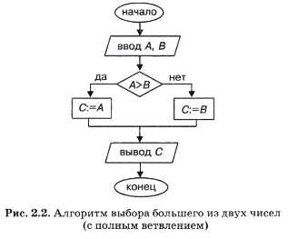
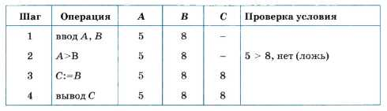
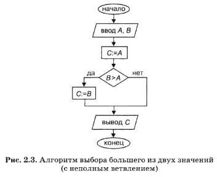
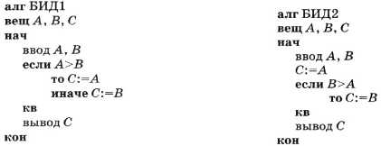
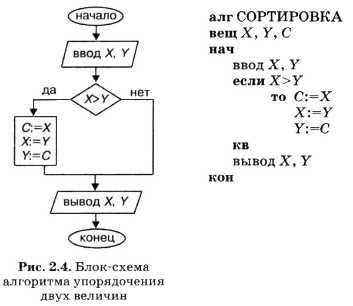
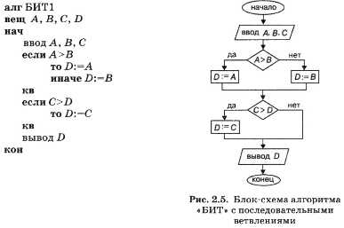
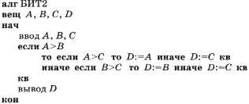
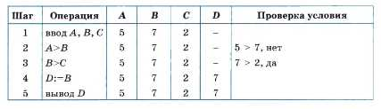
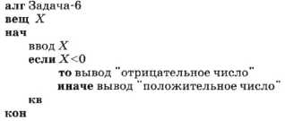

Тема урока: Алгоритмы с ветвящейся структурой
Цель урока:
Образовательная:1. познакомить учащихся с оператором ветвления на Паскале
2.познакомить с типами ветвления;
3.с формой записи оператора ветвления на Паскале.
Развивающая: сформировать умение записи оператора ветвления в среде программирования Паскаль;
2.развить логическое мышление.
Воспитательная: повысить мотивацию к изучению предмета информатики.
Оборудование: компьютерный класс с установленным ПО, презентация «Ветвления на Паскале», проектор, экран.
Рассмотрим несколько задач, решение которых на компьютере получается с помощью ветвящихся алгоритмов.
Первая задача: даны два числа; выбрать большее из них.
Пусть исходными данными являются переменные А и B. Их значения будут задаваться вводом. Значение большего из них должно быть присвоено переменной С
и выведено на экран компьютера. Например, если А = 5, В = 8, то должно получиться: С = 8.
Нетрудно понять смысл этого алгоритма. Если значение переменной А больше, чем В, то переменной С присвоится значение А. В противном случае, когда А ≤ B, переменной С присвоится значение B.
Условием, по которому разветвляется алгоритм, является отношение неравенства А > B. Изучая базы данных и электронные таблицы, вы узнали,
что такое отношение является логическим выражением. Если оно справедливо, то результатом будет логическая величина «истина» и выполнение алгоритма
продолжится по ветви «да»; в противном случае логическое выражение примет значение «ложь» и выполнение алгоритма пойдет по ветви «нет».

1
Вторая задача:
Формат записи оператор ветвления: if логическое_условие если логическое_условие верно then оператор_1 то выполняется оператор_1 , else оператор_2;
иначе оператор_2; Перед else точка с запятой не ставится! 1 Формат полного оператора ветвления: Формат неполного оператора ветвления: if <логическое выражение> if <логическое выражение> then <оператор 1> then <оператор> else <оператор 2>;
Логическое выражение: Простой формой логического выражения является операция отношения: o < меньше, o > больше, o <= меньше или равно, o >= больше или равно, o = равно, o <> не равно.
o not логическое отрицание (НЕ), o and логическое умножение (И), o or логическое сложение (ИЛИ), o xor исключающее ИЛИ Сложные формы логических выражений составляются с использованием логических операций
Порядок действий: Отрицание, умножение, сложение, операции отношений.
Операторные скобки: Если после слов then или else нужно выполнить не один оператор, а несколько, то эти операторы заключают в операторные скобки: begin … end
Конструкция такого вида: Begin <последовательность операторов> end относится к составным операторам. Операторы ветвления могут быть вложены друг в друга, необходимо только следить за тем, чтобы then и else одного и того же оператора располагались друг под другом.
Третья задача:
Из двух заданных целых чисел выбрать наибольшее.
Математическая модель: Данные: x, y Результат: Варианты: Если x=6, y=9, то max=9 Если x=5, y=1, то max=5 Если x=8, y=8, то max=8
Программа: Блоксхема: Program Prim; Var x, y, max: integer;
2 Begin Writeln (‘Введите два числа’);
Readln (x, y); ifx>=ythenmax:=x else max:=y;
Writeln (‘наибольшее = ’,max);
End. 4.
Выполнение самостоятельной.
Дано целое число. Если оно является положительным, то прибавить к нему 1, в противном случае вычесть из него два. Вывести полученное число.
Блок-схема алгоритма решения этой задачи изображена на рис. 2.2.
Нетрудно понять смысл этого алгоритма. Если значение переменной А больше, чем В, то переменной С присвоится значение А. В противном случае, когда А ? B,
переменной С присвоится значение B.
Условием, по которому разветвляется алгоритм, является отношение неравенства А > B. Изучая базы данных и электронные таблицы, вы узнали, что
такое отношение является логическим выражением. Если оно справедливо, то результатом будет логическая величина «истина» и выполнение алгоритма
продолжится по ветви «да»; в противном случае логическое выражение примет значение «ложь» и выполнение алгоритма пойдет по ветви «нет».

1
До выполнения на компьютере правильность алгоритма можно проверить путем заполнения трассировочной таблицы. Вот как будет выглядеть
трассировка нашего алгоритма для исходных значений А = 5, В = 8.
1
Ветвление является структурной командой.
Его исполнение происходит в несколько шагов:
1. проверка условия (выполнения логического выражения) и выполнение команд на одной из ветвей «да» или «нет».
Поэтому в трассировочной таблице записываются не команды алгоритма, а отдельные операции, выполняемые компьютером на каждом шаге.
В алгоритме на рис. 2.2 используется полное ветвление. Эту же самую задачу можно решить, применяя структурную команду неполного ветвления.
Блок-схема такого алгоритма изображена на рис. 2.3.

1
Выполните самостоятельно трассировку этого алгоритма для вариантов 1) А = 0,2, В = 0,3; 2) А = 7, Б = 4; 3) А = 5, В = 5.
Если вы всё проделаете правильно, то убедитесь, что алгоритм верный.
А теперь запишем рассмотренные алгоритмы на АЯ.
Во-первых, нужно решить вопрос о том, как описать переменные в этом алгоритме. Для всех переменных в алгоритме на АЯ необходимо указать их тип.
Переменные А, В, С — числовые величины. В этой задаче они могут принимать любые значения.
В программировании числовые величины, которые могут иметь любые значения — целые, дробные, называются вещественными.
Им ставится в соответствие вещественный тип. На АЯ этот тип указывается служебным словом вещ.
Как выглядит команда ветвления, вы уже знаете. Вот два алгоритма на АЯ, соответствующие блок-схемам на рис. 2.2 и 2.3.

1
Под сокращенным названием алгоритмов ВИД подразумевается «Большее из двух».
Для программирования характерно то, что одна и та же задача может быть решена с помощью разных алгоритмов. И чем сложнее задача, тем больше можно придумать различных алгоритмов ее решения.
Для больших задач (производственных, научных) практически невозможно точное совпадение алгоритмов, составленных разными программистами.
Следующая задача: упорядочить значения двух переменных X и Y по возрастанию.
Смысл этой задачи следующий: если для исходных значений переменных справедливо отношение X ? Y (например, X = 1, Y = 2), то оставить их без изменения;
если же X > Y (например, X = 2, Y = 1), то выполнить обмен значениями.
для обмена мы использовали третью, вспомогательную переменную.
В алгоритме решения данной задачи используется неполное ветвление. Приведем блок-схему (рис. 2.4) и алгоритм на АЯ.

1
Сложные ветвящиеся алгоритмы
Получим алгоритм решения еще одной задачи: найти наибольшее значение среди трех величин: А, В, С.
Естественно, возникает следующая идея этого алгоритма: сначала нужно найти большее из значений А и B и присвоить его какой-то дополнительной переменной, например D; затем найти большее среди D и С.
Это значение можно присвоить той же переменной D.
Решение задачи сводится к двукратному применению уже знакомого алгоритма нахождения большего из двух значений. Блок-схема алгоритма — на рис. 2.5.

1
Нетрудно догадаться, что «БИТ» обозначает «Большее из трех». В структуре этого алгоритма содержатся два последовательных ветвления: первое — полное, второе — неполное.
Эту же задачу можно решить с помощью алгоритма, имеющего структуру вложенных ветвлений. Его блок-схема приведена в следующем параграфе на рис. 2.6.
А вот как выглядят описание этого алгоритма на АЯ и трассировочная таблица при А = 5, B = 7, С = 2.

1

1
Коротко о главном
В команде ветвления в качестве условия может использоваться отношение неравенства между величинами.
Числовые величины, которые могут принимать целые и дробные значения, имеют вещественный тип.
Для решения одной и той же задачи можно построить несколько вариантов алгоритмов.
Несколько ветвлений в одном алгоритме могут быть последовательными и вложенными.
Вопросы и задания
1. Какую структуру имеет алгоритм нахождения большего из двух значений?
2. Почему отношение неравенства можно назвать логическим выражением?
3. Составьте алгоритм нахождения наименьшего из трех значений.
4*. Для вывода на экран произвольной символьной строки нужно в команде вывода записать эту строку в кавычках. Например, по команде
вывод "ОТВЕТ"
на экран выведется слово ОТВЕТ.
Определите, какая задача решается по следующему алгоритму.

1
5*. Составьте алгоритм, по которому на компьютере будет происходить следующее: в переменную S вводится возраст Саши, в переменную М вводится возраст Маши.
В качестве результата на экран выводится фраза «Саша старше Маши» или «Маша старше Саши» (предполагаем, что кто-нибудь из них обязательно старше).
6*. Решите предыдущую задачу, учитывая возможность одинакового возраста Саши и Маши. В таком случае может быть получен ответ: «Саша и Маша — ровесники».
7*. Составьте алгоритм упорядочения значений трех переменных по возрастанию, т. е. при любых исходных значениях А, B, С отсортируйте их так, чтобы стало: А ≤ В ≤ С.
Проверьте алгоритм трассировкой при разных вариантах значений исходных данных.
Здесь роль вспомогательной переменной для обмена выполняет С.
Задачи для самостоятельного решения:
1. Дано целое число. Если оно является положительным, то прибавить к нему 1, в противном случае вычесть из него два. Вывести полученное число.
2. Даны три стороны одного треугольника и три стороны другого треугольника. Определить, будут ли эти треугольники равновеликими, т. е. имеют ли они равные площади.